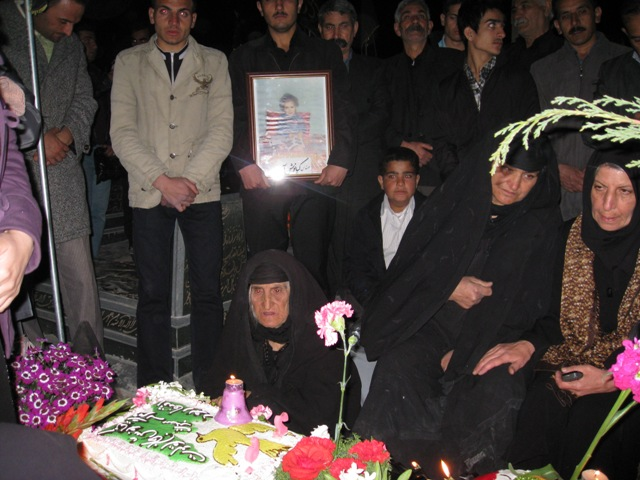
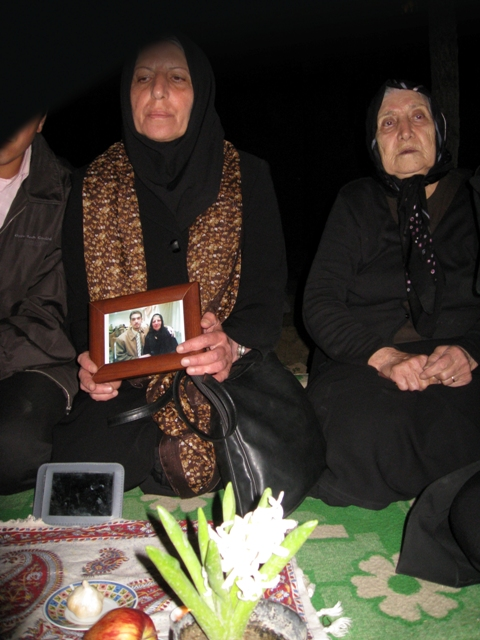
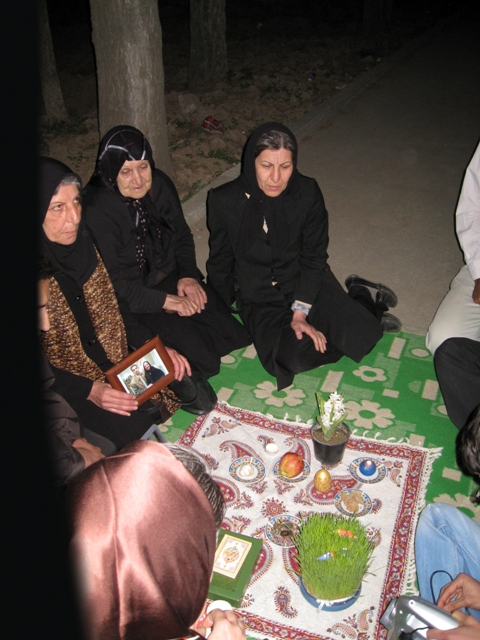
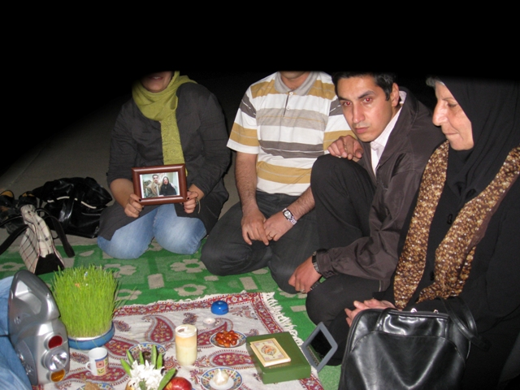

|
|

سفره هفت سین مادر کاوه کرمانشاهی و دیگرمادران کرمانشاه در برابر بازداشتگاه کرمانشاه
يكشنبه1 فروردین 1389
 
خانواده ی کاوه ی قاسمی کرمانشاهی، فعال حقوق بشر، به همراه جمعی از فعالین مدنی کرمانشاه و سنندج، سفره ی هفت سین را مقابل بازداشنگاه اطلاعات کرمانشاه پهن کردند.

کاوه کرمانشاهی، عضو سازمان حقوق بشر کردستان، فعال کمپین یک میلیون امضا و از اعضای ادوار تحکیم وحدت کرمانشاه بود که روز 14 بهمن ماه در منزلش دستگیر و به اداره ی اطلاعات منتقل شد. پس از 27 روز، مادر این فعال مدنی موفق به ملاقات کوتاهی با فرزندش گردید. بعد از آن بازداشت موقت کاوه کرمانشاهی برای ماه دوم تمدید شد. در تمام این مدت وکیل پرونده، مصطفی احمدیان، اجازه ی مطالعه ی پرونده ی موکلش را پیدا نکرده است. و علی رغم نامه ی قاضی پرونده مبنی بر دستور ملاقات خانواده قبل از عید، اداره ی اطلاعات این اجازه را به خانواده ی وی نداد.
خانواده و دوستان این فعال حقوق بشر، سفره ی هفت سین خود را به مقابل بازداشتگاه اطلاعات بردند و سال نو را تحویل کردند.

خانواده ی کاوه کرمانشاهی و فعالین مدنی، سپس به سر مزار رفتند و از خانواده ی کیانوش آسا، دانشجوی نخبه ی دانشگاه علم و صنعت که در حوادث پس از انتخابات کشته شد، دیدن کردند. این دیدار مصادف با تولد کیانوش بود و خانواده اش با قرار دادن کیک و گل بر روی مزار این دانشجوی شهید، تولد وی را برگزار کردند.